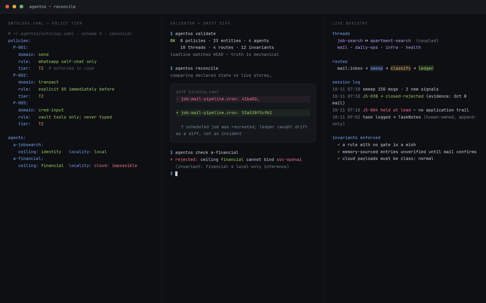

An operating model for personal AI agents: say what the system is in data, and let drift surface as a diff.

Personal AI agents fail by accretion. A mail pipeline here, a morning digest there, a browser automation wired to one shell script and a prompt that says "never send money actions" somewhere in the system prompt. Six months in, nobody — including the agent — can answer basic questions: what is this agent allowed to do? Which job writes which file? Which policy is enforced, and which is a hope expressed in prose? Policies drift from behavior, context bleeds across unrelated work, and the failure mode is quiet until it isn't.
AgentOS treats the agent fleet as a specification problem. The core is a versioned ontology — v1.4.0 on schema version 3 — written in YAML and validated against a JSON Schema before anything runs. It defines closed vocabularies (domains: local / external / comm; target classes: normal / secret / financial / physical / identity; verdicts: deny / confirm) and a typed graph of services, tools, jobs, channels, threads, and policies. Twelve machine-checkable invariants hold it together; my favorite: a rule with no gate is a wish.
A separate binding file maps every ontology ID to a live harness address: cron job refs, CDP ports, mount points, credential handles. Switching agent harnesses means rewriting only the binding; the ontology rides along untouched. Reconciliation passes diff spec against reality: a cron job that exists but isn't declared, a declared job with no scheduler ref, a policy naming an enforcement mechanism that doesn't exist in the binding. Each is a validator error, so drift shows up as a failing check — a diff, not an incident.
upgrade_path. Several policies are still prompt-tier with a declared upgrade to scope
isolation. The ontology doesn't hide that; it tracks it as debt.A pre-commit hook blocks any commit that fails schema validation. The cron fleet — mail pipeline,
morning digest, news digest, inference watchdog, job-search sweep — each carries its scheduler ref
in the binding, and every job's success or failure is routed by explicit route rules or declared
silent. Memory is typed the same way: every retain call carries tags like
thread:job-search, entity:job-mail-pipeline,
rel:serves, so threads are first-class graph nodes and cross-thread links
(job-search ⟷ apartment-search) are declared edges, not implied vibes. Personas are enforcement
envelopes — each agent declares which stores it can touch, which models it may use, and which
channels it may speak on. It's the same discipline I ran at platform scale, pointed inward at one
person's life.